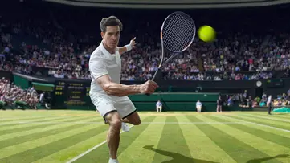

EURO 2024 Elemeleri'nde günün programı

2024 Avrupa Futbol Şampiyonası Elemeleri'nde 9. hafta dün oynanan maçlarla başladı.
Devami buradaA Milli Takım olimpiyat şansını kaybetti

A Milli Takım, FIBA Olimpiyat Ön Eleme Turnuvası finalinde Hırvatistan'a 84-71 mağlup olarak 2024 Paris Olimpiyat Oyunları'na katılım hakkını kaybetti.
Devami buradaMick Schumacher’in geleceği belirsiz

Formula 1 takımlarından Mercedes’in yedek pilotu Mick Schumacher, geleceği ile ilgili kararı henüz vermediğini takımının resmi sitesine açıkladı.
Devami buradaTenis Turnuvasından Öne Çıkan Anlar
İtalyan tenisçi Jannik Sinner, Profesyonel Tenisçiler Birliği (ATP) 1000 serisi turnuvası Paris Masters'tan çekildiğini duyurdu.
Devami burada.LeBron James Konuştu: Sayı Rekoru, Oğluyla Oynama Hayali ve Lakers’ın Durumu…

LeBron James, ESPN’e verdiği röportajda birçok konuya değindi.
Devami burada.Milli yüzücüler, 3. Akdeniz Plaj Oyunları'nda 3 madalya aldı

ANKARA (AA) - Milli yüzücüler, Yunanistan'da gerçekleştirilen 2023 Heraklion 3. Akdeniz Plaj Oyunları'nda paletli yüzmede 3 madalya aldı.
Devami burada.